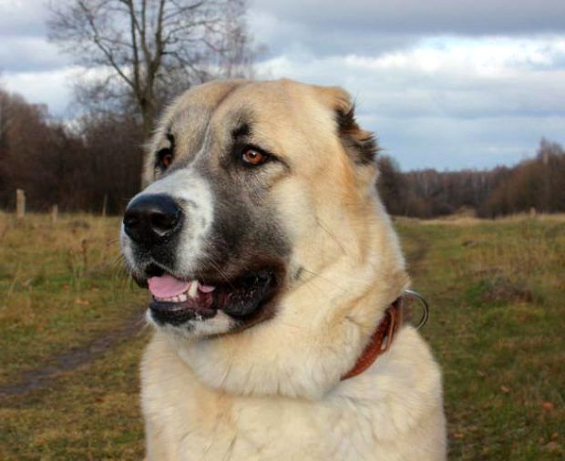

КАВКАЗЬКА ВІВЧАРКА
Алабай
Загальні характеристики і батьківщина породи
Одна з найбільших порід собак - кавказька вівчарка - успішно несе вартову вахту, будучи на службі, і стає прекрасним компаньйонам-захисником для господаря та його сім'ї.
Історики припускають, що ця порода вже була поширена на Кавказі в 7 столітті до н.е. Їх використовували, щоб охороняти стада і житла від хижаків та інших ворогів.
- Країна походження - Грузія
- Середня тривалість життя 10 років
- Висота 75 см
- Вага 50 - 70 кг
Кавказька вівчарка - представниця собак маленьких гігантських порід з масивним кістяком. Підшерсток у кавказьких вівчарок досить густий, а шерсть буває трьох типів: коротка, проміжна і довга. Останній вид найбільш поширений. Забарвлення різноманітні: біле, буре, палеве, руде, вовче (сіре), маска також може бути присутньою. Вуха за стандартом породи повинні бути мінімізовані, хоча це вже й не вважається обов'язковим.
Харчування
Для здорового росту і розвитку представнику такої великої породи необхідно отримувати достатній рівень і протеїну щодня, як і мінералів з вітамінами. Одним із найкращих і зручних способів забезпечити вихованцеві правильний раціон - годувати покупною продукцією класів холістік або супер-преміум. Вибирати варто корм, який відповідає собакам гігантських порід, адже в них міститься правильний баланс поживних речовин.
Якщо займатися приготуванням їжі самостійно, то щодня потрібно давати вівчарці колу м'ясо. Добре підходять сира яловичина, курка, морська риба, а також овочі, фрукти, періодично - яйця і кисломолочні продукти.
Догляд за породою
Розчісувати кавказьку вівчарку необхідно щодня, бажано використовувати щітку з грубою щетиною, зовсім не боячись поранити шкіру вихованцеві. Час від часу можуть утворюватися ковтуни, які доведеться вистригати. Періодично треба підстригати нігті кігті. Купати кавказьку вівчарку часто не рекомендується, адже цей процес може посилити линьку і сплутування вовни, хоча собаки дуже позитивно ставляться до водних процедур.
Кавказька вівчарка є сильною, витривалою і здоровою собакою, хоча схильна до захворювань, характерних для представників великих порід: дисплазії тазостегнових суглобів і проблеми з серцем. У подібних випадках за допомогою необхідно звертатися до ветеринарного лікаря.